Nodo Norte & Nodo Sul
Por que eu repito padrões? Zona de conforto × crescimento, com exercícios e reflexão prática.
Sobre
O Aura Prisma é um espaço de leitura simbólica: Arcanos, Numerologia e Astrologia como ferramentas de reflexão e consciência. Entregas em PDF, com linguagem clara e estética espiritual.

Serviços
Arcano Pessoal + Arcano do Ano
Leitura completa em PDF: essência, desafios, luz/sombra e orientações do ciclo.
Arcano do Ano
Leitura simples e objetiva para compreender a energia do seu ano e agir com clareza.
Ritual de Transição
Um ritual guiado (texto + intenções) para fechar ciclos e abrir caminhos com leveza.
Como funciona
- Você pede pelo botão de contato.
- Envia seus dados (nome + data de nascimento; e se tiver, horário/cidade).
- Recebe seu PDF em até alguns dias, com leitura e orientações.
Quer pedir uma leitura agora?

Conteúdo espiritual para autoconhecimento • não substitui orientação profissional (médica, psicológica, jurídica etc.).